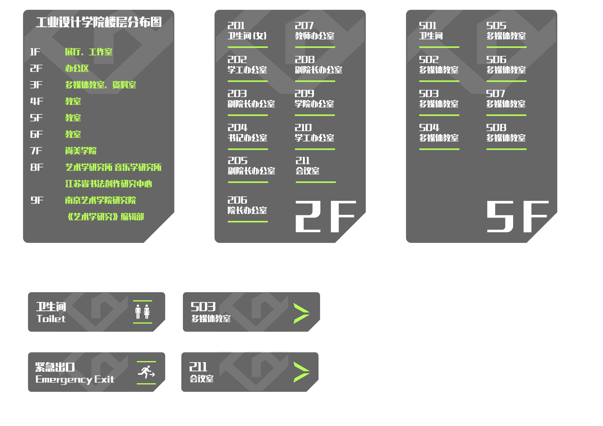

Logo Design for the School of Industrial Design
Inspired by the preliminary manuscript, the subject was ultimately reduced to the two letters “I” and “d” (45 degrees relative) connected together."ID" means the School of Industrial Design. The use of irregular geometric shapes and gray-cold cold color matching is to highlight the industrial style.